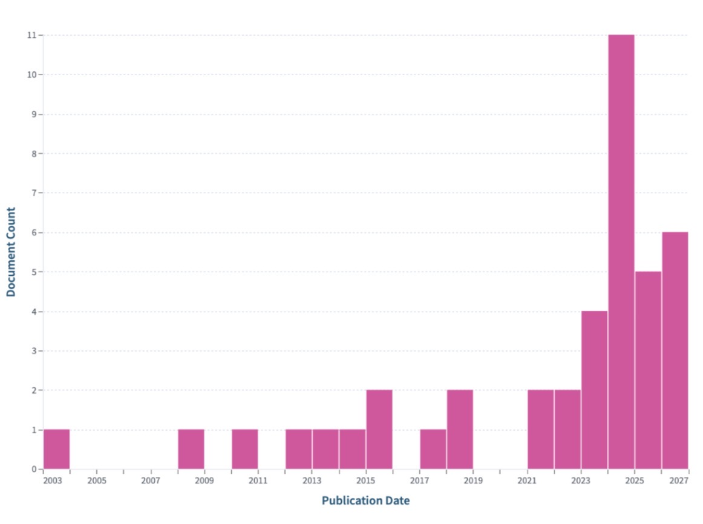
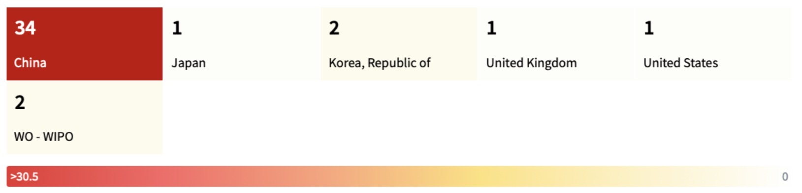
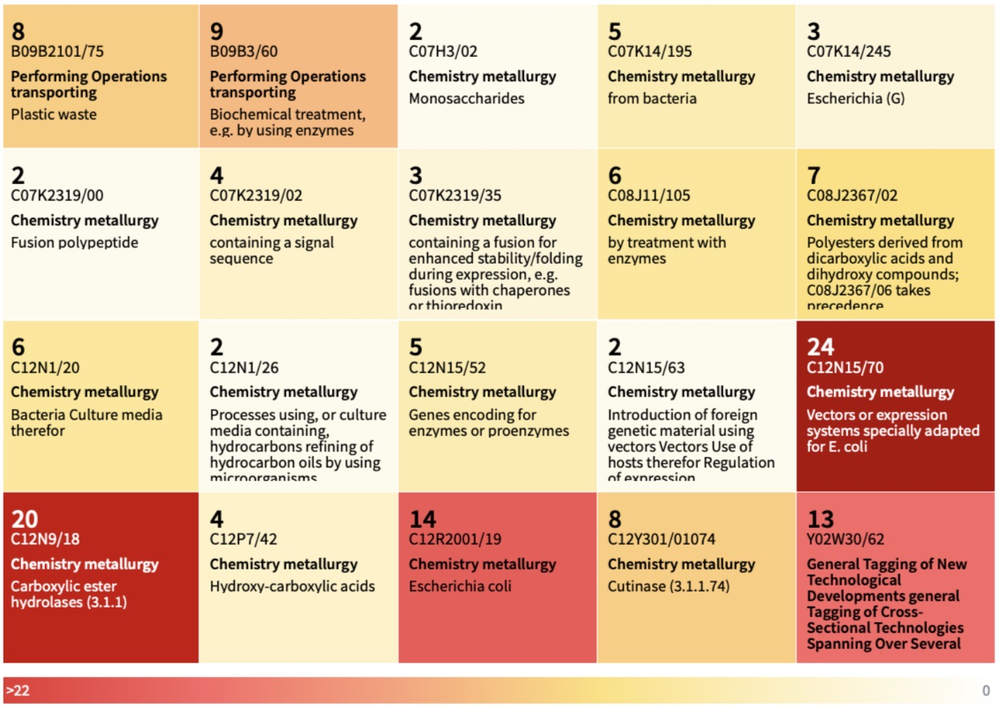
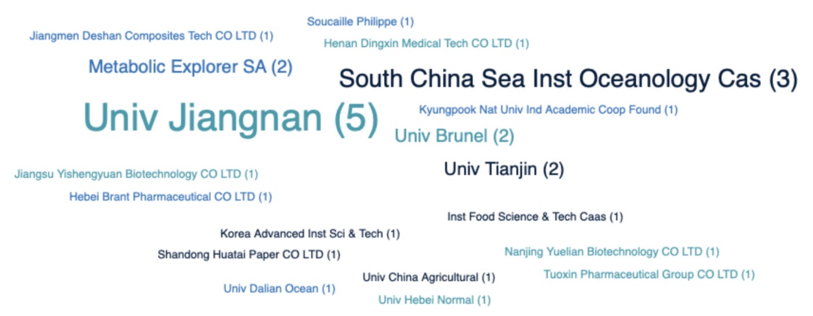
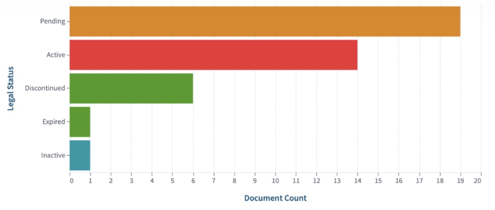

Perché Escherichia coli rappresenta lo standard tecnologico?
L'analisi di landscape brevettuale condotta sul dataset micro ha messo in luce una netta e inequivocabile convergenza tecnologica verso l'impiego di vettori microbici ricombinanti, con una prevalenza assoluta per la scelta dell' Escherichia coli.
Se da un lato la ricerca scientifica di base esplora costantemente nuovi isolati batterici e fungini in grado di degradare la plastica in natura, l'analisi dei brevetti dimostra come la scalabilità industriale e l'ingegnerizzazione genetica prediligano nettamente E. coli quale organismo ospite principale.
1. Versatilità di Ingegnerizzazione
Rappresenta il modello biologico meglio caratterizzato al mondo. La disponibilità di un kit infinito di strumenti di biologia sintetica consente di ottimizzare finemente l'espressione di enzimi complessi come PETasi, cutinasi ed esterasi.
2. Alta Resa di Produzione Enzimatica
Per rendere sostenibile un processo di bioriciclo su scala industriale, è necessario produrre elevate quantità di biomassa e di enzima a costi contenuti. E. coli garantisce tassi di crescita elevatissimi difficilmente eguagliabili.
3. Tracciabilità e Requisiti Regolatori
L'ampia familiarità dei regolatori internazionali con ceppi derivati da E. coli (spesso di livello K-12 o B, ritenuti trascurabili sotto il profilo di biosicurezza) semplifica i percorsi di tutela IP e velocizza i processi di autorizzazione per il trasferimento della tecnologia dal laboratorio alla scala pilota.
1 Trend Temporale delle Pubblicazioni
Evoluzione storica dei depositi brevettuali focalizzati su E. coli (2003-2026).

| Publication Year | Document Count |
|---|---|
| 2003 | 1 |
| 2008 | 1 |
| 2010 | 1 |
| 2012 | 1 |
| 2013 | 1 |
| 2014 | 1 |
| 2015 | 2 |
| 2017 | 1 |
| 2018 | 2 |
| 2021 | 2 |
| 2022 | 2 |
| 2023 | 4 |
| 2024 | 11 |
| 2025 | 5 |
| 2026 | 6 |
2 Mappatura Geografica (Giurisdizioni)
Distribuzione dei depositi brevettuali per Paese o ufficio brevetti.

| Jurisdiction | Document Count |
|---|---|
| China | 34 |
| Korea, Republic of | 2 |
| WO - WIPO | 2 |
| United Kingdom | 1 |
| Japan | 1 |
| United States | 1 |
3 Classificazione Tecnologica (Codici CPC)
Prevalenza delle classi tecnologiche nel sotto-dataset E. coli.

| CPC Classification Code | Document Count |
|---|---|
| C12N15/70 | 24 |
| C12N9/18 | 20 |
| C12R2001/19 | 14 |
| Y02W30/62 | 13 |
| B09B3/60 | 9 |
| B09B2101/75 | 8 |
| C12Y301/01074 | 8 |
| C08J2367/02 | 7 |
| C08J11/105 | 6 |
| C12N1/20 | 6 |
| C07K14/195 | 5 |
| C12N15/52 | 5 |
| C07K2319/02 | 4 |
| C12P7/42 | 4 |
| C07K14/245 | 3 |
| C07K2319/35 | 3 |
| C07H3/02 | 2 |
| C07K2319/00 | 2 |
| C12N1/26 | 2 |
| C12N15/63 | 2 |
4 Principali Richiedenti (Top 20 Applicants)
Classifica degli enti e università leader per numero di depositi brevettuali su E. coli.

| Applicant Name Exact | Document Count |
|---|---|
| Nanjing University Of Technology | 10 |
| Univ Jiangnan | 5 |
| South China Sea Inst Oceanology Cas | 3 |
| Metabolic Explorer SA | 2 |
| Univ Brunel | 2 |
| Univ Tianjin | 2 |
| Hebei Brant Pharmaceutical CO LTD | 1 |
| Henan Dingxin Medical Tech CO LTD | 1 |
| Inst Food Science & Tech Caas | 1 |
| Jiangmen Deshan Composites Tech CO LTD | 1 |
| Jiangsu Yishengyuan Biotechnology CO LTD | 1 |
| Korea Advanced Inst Sci & Tech | 1 |
| Kyungpook Nat Univ Ind Academic Coop Found | 1 |
| Nanjing Yuelian Biotechnology CO LTD | 1 |
| Shandong Huatai Paper CO LTD | 1 |
| Soucaille Philippe | 1 |
| Tuoxin Pharmaceutical Group CO LTD | 1 |
| Univ China Agricultural | 1 |
| Univ Dalian Ocean | 1 |
| Univ Hebei Normal | 1 |
5 Stato Legale dei Brevetti
Ripartizione dello stato giuridico dei brevetti appartenenti al focus E. coli.

| Legal Status | Document Count |
|---|---|
| Pending | 19 |
| Active | 14 |
| Discontinued | 6 |
| Expired | 1 |
| Inactive | 1 |